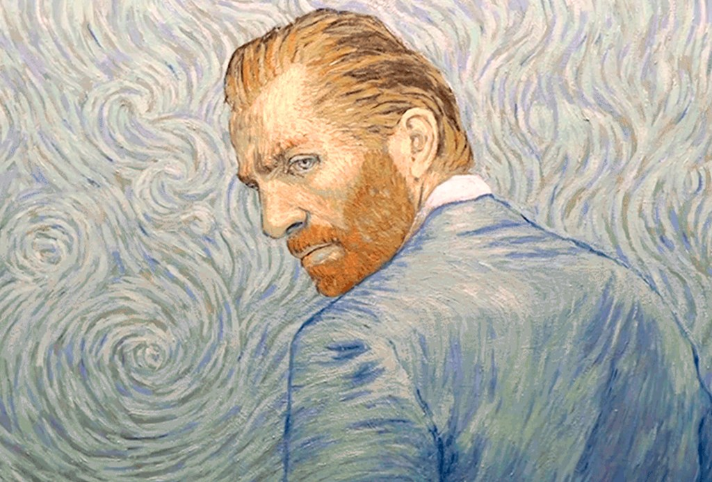

Leave us a comment!
Bio
30 March 1853
Vincent Willem van Gog was a Dutch painter,
famous as one of the most influential post-impressionist
artists because of works such as
Van Gogh left the school by the time he was fifteen; he also took pride in beign self-taught for the rest of his life in terms of art. It is also well-known that his active period as a painter was only ten years.
His last days were marked by psychiatric problems, suffered from anguish, terror and hallucinations with very intense outbursts of anger.
Death
29 July 1890
He died at the age of 37. Some people consider he probably might have commited suicide, but some others think over it was told by him because he wanted to hide the author of what could have been a possible accident that led to his death. He died two days later because of his injuries.
Curiosities
- His opus was only recognised after his death, He was not commercially successful. Considered a failure during his lifetime.
- He was named after a stillbirth brother.
- He's also known because of being the artist who cut off his ear. Although this episode is involved in many supositions.
Theo , his brother was one of the most influential persons as he financially supported him and it is widely known they kept a long correspondence by letter. They were so closed that six months after Vincent's death, Theo went trough a depression himself and passed away.- Many of his works are considered the world's most expensive paintings ever.
Leave us your e-mail: